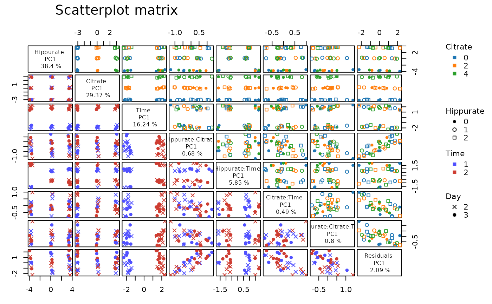
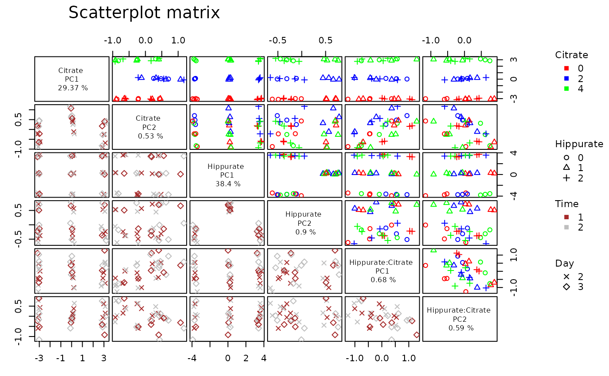

Scatterplot matrix of effect matrices scores
Source:R/lmpScoreScatterPlotM.R
lmpScoreScatterPlotM.RdPlots the scores of all model effects simultaneously in a scatterplot matrix.
By default, the first PC only is kept for each model effect and, as a wrapper of plotScatterM, the choice of symbols and colors to distinguish factor levels allows an enriched visualization of the factors’ effect on the responses.
Usage
lmpScoreScatterPlotM(
resLmpPcaEffects,
effectNames = NULL,
PCdim = NULL,
modelAbbrev = FALSE,
...
)Arguments
- resLmpPcaEffects
A list corresponding to the output value of
lmpPcaEffects.- effectNames
A character vector with the name of the effects to plot.
- PCdim
A numeric vector with the same length than effectNames and indicating the number of component to plot.
- modelAbbrev
A logical whether to abbreviate the interaction terms or not.
- ...
Additional arguments to be passed to
plotScatterM.
Details
lmpScoreScatterPlotM is a wrapper of plotScatterM.
Examples
data("UCH")
resLmpModelMatrix <- lmpModelMatrix(UCH)
ResLmpEffectMatrices <- lmpEffectMatrices(resLmpModelMatrix)
resLmpPcaEffects <- lmpPcaEffects(ResLmpEffectMatrices, method = "ASCA-E")
lmpScoreScatterPlotM(resLmpPcaEffects,
varname.colorup = "Citrate",
varname.pchup = "Hippurate",
varname.pchdown = "Day",
varname.colordown = "Time"
)

# advanced setting
lmpScoreScatterPlotM(resLmpPcaEffects,
modelAbbrev = FALSE,
effectNames = c("Citrate", "Hippurate", "Hippurate:Citrate"),
PCdim = c(2, 2, 2),
varname.colorup = "Citrate",
vec.colorup = c("red", "blue", "green"),
varname.pchup = "Hippurate",
vec.pchup = c(1, 2, 3),
varname.pchdown = "Day",
vec.pchdown = c(4, 5),
varname.colordown = "Time",
vec.colordown = c("brown", "grey")
)
